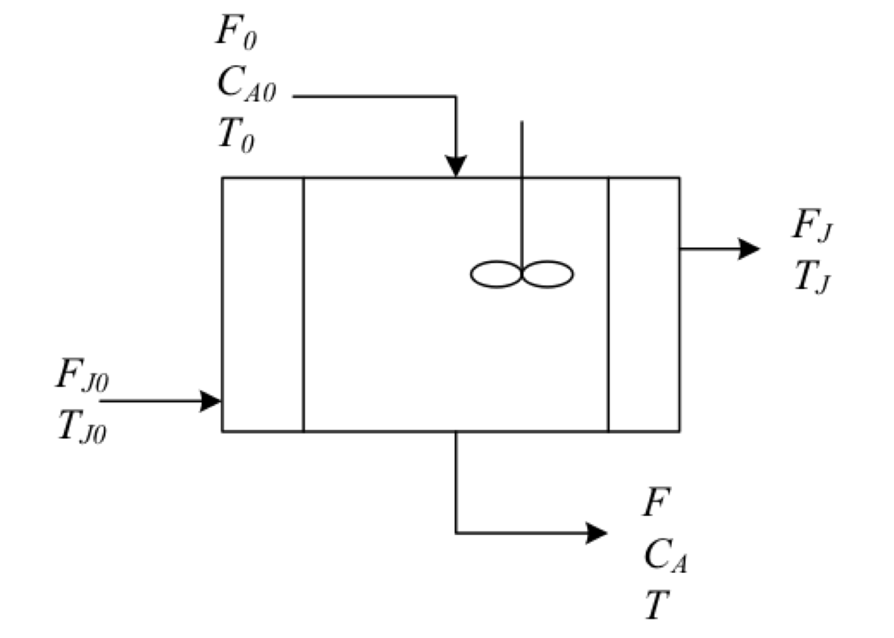

Chapter 5 Models for nonideal flow
The information provided by RTD functions is essential to know if a reactor has dead zones or bypassing. These situations affect the reactor performance. Thus, the main target is answering the question “How much bypassing or dead volume is acceptable?”
For answering, the chemical engineer needs to calculate the performance of the reactor. Furthermore, to do so, two types of information are required: the flow patterns and the kinetic model.

The information provided by RTD functions is essential to know if a reactor has dead zones or bypassing. These situations affect the reactor performance. Thus, the main target is answering the question "How much bypassing or dead volume is acceptable?’’.
For answering, the chemical engineer needs to calculate the performance of the reactor. Furthermore, to do so, two types of information are required: the flow patterns and the kinetic model.
The RTD curves found from tracer studies are only partial information on the details of the flow patterns because all that is known is the length of time-specific fractions of the fluid stay in the vessel (macromixing), but neither what of these fractions do while in the vessel nor in what geometric locations they reside, that is, information on micromixing.
As a result, several mathematical models of reactor performance have been developed to estimate the conversion levels in a nonideal reactor. (C. Jr. Hill 1977)
The micromixing behavior has two extremes views:
- Complete segregation: any fluid element is isolated from all other fluid elements and retains its identity throughout the entire vessel. No micromixing occurs, but macromixing may occur.
- Complete dispersion: fluid elements interact and mix thoroughly at the microscopic level.
Besides the degree of segregation of fluid elements, another aspect of mixing is the relative time in passage through a vessel at which fluid element mix (‘’earliness’’ of mixing). (Missen, Mims, and Bradley 1999)
In general, a mathematical model for nonideal flow in a vessel provides a characterization of mixing and flow behavior. Although it may appear to be an independent alternative to the experimental measurement of RTD, the latter may be required to determine the parameter(s) of the model.
For that reason, these mathematical models can be classified in function of the number of adjustable parameters. (Fogler 2008)
- Zero adjustable parameters
- segregation model
- maximum mixedness model
- One parameter model
- tanks-in-series model
- dispersion model
- Two adjustable parameters
- actual reactor modeled as combinations of ideal reactors
These parameters are correlated as functions of fluid and flow properties, reactor configurations, along with other vital features, and can be used in design calculations.
Generally speaking, the more adjustable parameters used in a model, the better the correlation between predicted and observed RTD would be. These adjustable parameters are often related to RTD moments and are usually expressed in terms of dimensionless moments about the mean.
The usual approach is developing a model flow system with the same RTD as the existing system. Provided that the conservation equations can be written for this model system, the performance of the actual vessel can be predicted.
5.1 Zero adjustable parameters
Segregational or macrofluid model
This model represents the micromixing condition of complete segregation (no mixing) of fluid elements, which means that fluid flows through a vessel with no mixing between adjacent fluid elements. The feed enters the reactor as little packets of fluid. Each packet retains its identity as they pass through the vessel; there is no mass exchange between individual packets. However, packets can mix each other in the reactor. Thus those that enter at some time, t, will not all leave at the same time.
Each packet can be treated as a small ideal batch reactor. A reaction (or reactions) takes place as the tiny packets move through the vessel. The composition of each packet changes while it is flowing through the vessel. However, its final conversion will depend on how long the packet has spent in the vessel. (Roberts 2009).
After leaving the reactor, all fluid packets are mixed on a molecular level, and the average composition is measured. This situation is represented in Figure 5.1. (Roberts 2009)
![Segregational model scheme. [@roberts2009]](ebook_notes_5314_files/figure-html/fig004010c-1.png)
Figure 5.1: Segregational model scheme. (Roberts 2009)
When the packets are admitted to a CSTR, we can envisage two scenarios that involve perfect mixing: one with perfect mixing at the macroscale and the other with perfect mixing at the microscale, as is shown in Figure 5.2
![Different levels of mixing in a CSTR: (a) Segregational model, (b) Ideal CSTR model. [@hayes2013]](ebook_notes_5314_files/figure-html/fig004010d-1.png)
Figure 5.2: Different levels of mixing in a CSTR: (a) Segregational model, (b) Ideal CSTR model. (Hayes and Mmbaga 2013)
The conversion in a segregated tank reactor can be calculated using the ideal batch reactor equation design and the RTD curve. Each batch reactor has its conversion, which depends on its time in the tank. While the RTD gives information about the mean residence time.
The initial concentration of reactants in the packet is the same as the inlet concentration of the reactor. While each fluid element (assuming constant density) behaves as a batch reactor, the total reactor conversion is the average conversion of all the fluid elements at the outlet conditions. That is:


WIP